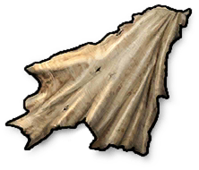

Materials
Items · MaterialsCloth

Cloth / MaterialsHow to obtain
How to obtainLootObtained as loot
FurnaceLeather → Cloth ×1
RecyclingObtained by recycling: Backpack ×12, Sewing Kit ×10, Bed ×10, Tarp ×7, Medkit ×7, Wooden Bow ×7, Crossbow ×6, Rope ×6, Elf Hat ×5, Wooden Sandals ×5, Witch Hat ×5, Wood Chestplate ×5, Santa Hat ×5, Sleeping Bag ×5, Bone Chestplate ×5, Wooden Leggings ×5, Night Watch (Pumpkin Lamp) ×5, Plethora Guardian (Werewolf Trophy) ×5, Hunting Rifle ×4, Assault Rifle ×4, Metal Chestplate ×4, Metal Leggings ×3, Wooden Spiked Club ×2, Metal Boots ×2, Bone Leggings ×2, Bone Club ×2, Bandage ×2, Metal Mask ×2, Pipe Pistol ×2, Candles ×2, Wooden Helmet ×2, Bone Shoes ×2
Item description
Obtained by burning leather in a furnace.
Crafting notes
Harvested from animal carcasses, by burning leather in a furnace, or collecting cotton on the map.